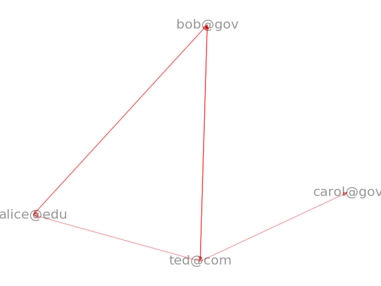

Note
Click here to download the full example code
Unix Email¶
Create a directed graph, allowing multiple edges and self loops, from a unix mailbox. The nodes are email addresses with links that point from the sender to the receivers. The edge data is a Python email.Message object which contains all of the email message data.
This example shows the power of DiGraph to hold edge data
of arbitrary Python objects (in this case a list of email messages).
The sample unix email mailbox called “unix_email.mbox” may be found here: https://raw.githubusercontent.com/networkx/networkx/master/examples/drawing/unix_email.mbox
Out:
From: ted@com To: carol@gov Subject: get together for lunch to discuss Networks?
From: ted@com To: alice@edu Subject: get together for lunch to discuss Networks?
From: ted@com To: bob@gov Subject: Graph package in Python?
From: ted@com To: bob@gov Subject: get together for lunch to discuss Networks?
From: alice@edu To: bob@gov Subject: NetworkX
From: bob@gov To: ted@com Subject: Re: Graph package in Python?
From: bob@gov To: alice@edu Subject: Re: NetworkX
# Author: Aric Hagberg (hagberg@lanl.gov)
# Copyright (C) 2005-2018 by
# Aric Hagberg <hagberg@lanl.gov>
# Dan Schult <dschult@colgate.edu>
# Pieter Swart <swart@lanl.gov>
# All rights reserved.
# BSD license.
import email
from email.utils import getaddresses, parseaddr
import mailbox
import sys
import matplotlib.pyplot as plt
import networkx as nx
# unix mailbox recipe
# see https://docs.python.org/2/library/mailbox.html
def mbox_graph():
try:
fh = open("unix_email.mbox", 'rb')
except IOError:
print("unix_email.mbox not found")
raise
mbox = mailbox.UnixMailbox(fh, email.message_from_file) # parse unix mailbox
G = nx.MultiDiGraph() # create empty graph
# parse each messages and build graph
for msg in mbox: # msg is python email.Message.Message object
(source_name, source_addr) = parseaddr(msg['From']) # sender
# get all recipients
# see https://docs.python.org/2/library/email.html
tos = msg.get_all('to', [])
ccs = msg.get_all('cc', [])
resent_tos = msg.get_all('resent-to', [])
resent_ccs = msg.get_all('resent-cc', [])
all_recipients = getaddresses(tos + ccs + resent_tos + resent_ccs)
# now add the edges for this mail message
for (target_name, target_addr) in all_recipients:
G.add_edge(source_addr, target_addr, message=msg)
return G
if __name__ == '__main__':
G = mbox_graph()
# print edges with message subject
for (u, v, d) in G.edges(data=True):
print("From: %s To: %s Subject: %s" % (u, v, d['message']["Subject"]))
pos = nx.spring_layout(G, iterations=10)
nx.draw(G, pos, node_size=0, alpha=0.4, edge_color='r', font_size=16, with_labels=True)
plt.show()
Total running time of the script: ( 0 minutes 0.130 seconds)